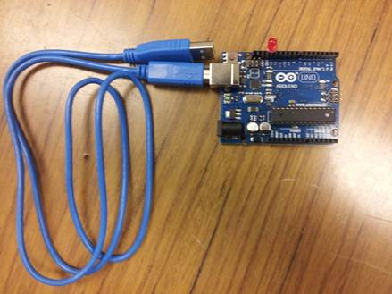
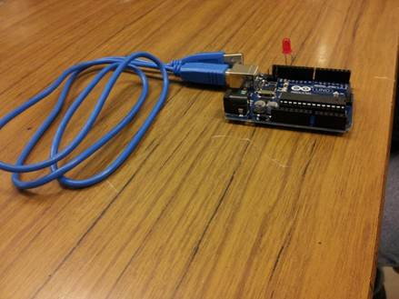
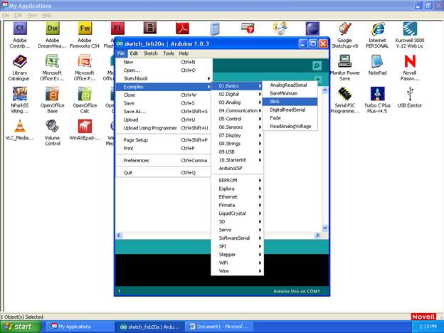
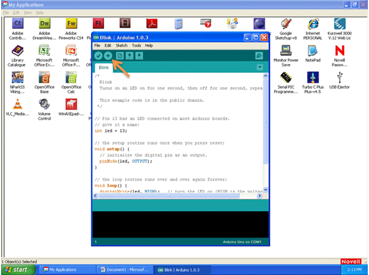

1. Obtain an LED attach the positive terminal to the digital I/O pin 13 (longer terminal lead)
2. Connect the negative terminal of the LED (shorter terminal lead on the side where there is a flat edge on the LED casing) to ground pin (GND)
3. Connect the Arduino board to the computer with the USB cable  
4. Open the Arduino Software
5. Select File > Examples > 01. Basics > Blink (this code will blink the LED connected to pin 13) 
6. Upload the code to the board by clicking the arrow button next to the check mark at the top (Ensure that the board is connected to the computer with the USB Cable) 
7. The attached LED should blink.